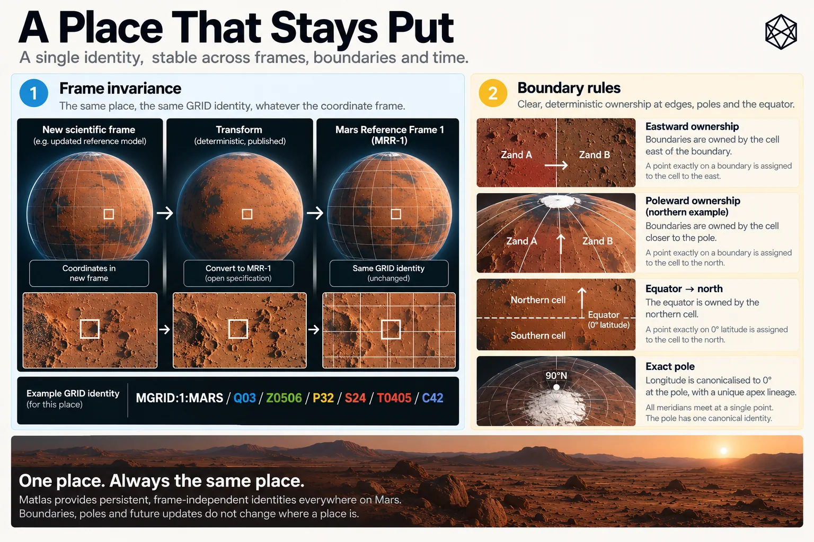

A Place That Stays Put
Reference Frames, Boundaries and Persistence
The most important property of a civil spatial identity may be that, after a while, it becomes boring.
Once an identifier appears in a maintenance record, emergency plan, scientific archive or contract, nobody wants to reopen the geometry every few years because the underlying science has improved. Better measurements are welcome. Better maps are inevitable. The difficult requirement is allowing both without turning yesterday’s Click into today’s neighbouring Click.
Science and civil infrastructure want different things from the same planet. Science wants its representation of Mars to improve as observations and models improve. Civil infrastructure wants an identifier written today to continue referring to the same ground decades later.
A coordinate system should become more accurate. A civil address should not wake up somewhere else.
GRID solves that tension by freezing its civil reference geometry rather than freezing planetary science.
Freeze the civil ruler, not the science

Read a description of this illustration
The artwork explains why updating the scientific measurement system does not automatically change the geometric extent of an MGRID v1 unit. A position in a newer frame must be transformed to the frozen MRR-1 definition before resolution.
A crater rim, buried cable or landing pad occupies a physical location whether our current coordinate model describes that location perfectly or not.
Latitude and longitude are part of our mathematical representation of Mars. Their physical interpretation depends on definitions for the planet’s rotation, pole, prime meridian and associated reference parameters. As planetary science improves, those definitions and their realised coordinate frames may improve too.
That is exactly what should happen.
GRID therefore does not demand that future cartographers continue using an inferior scientific frame simply because somebody once drew civil boundaries against it. Instead, MGRID:1:MARS defines those boundaries against one explicitly frozen civil reference realisation: MGrid Mars Reference Realisation 1, or MRR-1.
MRR-1 is based on the Mars orientation and longitude framework used when GRID was designed. Its purpose is continuity. It fixes the spatial ruler against which the version-one GRID geometry is defined.
Suppose a better scientific frame is adopted twenty years later. The same physical antenna may then receive slightly different latitude and longitude values because the model has improved. To determine its GRID identity, those newer coordinates are transformed into MRR-1 and membership is calculated there.
The improved scientific coordinate remains the improved scientific coordinate.
GRID does not require anyone to pretend otherwise.
It simply says that MGRID:1:MARS is still measured against the ruler with which MGRID:1:MARS was originally drawn.
Imagine a buried power cable running very close to a Click boundary. A later reference-frame refinement shifts the calculated position of that cable a small distance. If GRID were automatically regenerated against every newer scientific frame, the cable could apparently migrate into the neighbouring Click without moving on Mars at all.
The new scientific representation would be better.
The old maintenance record would be worse.
Multiply that across infrastructure records, emergency plans, scientific archives and decades of operational history and a very small spatial refinement creates a surprisingly large administrative problem.
So GRID keeps the identity fixed and transforms measurements into it.
An identifier refers to ground
This makes the meaning of a GRID identifier precise.
Consider:
MGRID:1:MARS/Q09/Z0510/P22/S23/T0405/C35
That string does not identify one particular coordinate pair. It identifies a defined piece of Martian surface whose angular bounds are fixed in MRR-1.
A future scientific frame may assign a slightly different coordinate to a feature inside that Click. That does not redefine the Click. The physical location is transformed into MRR-1 and tested against the existing bounds.
The direction is deliberate:
current measurement → transform into MRR-1 → resolve GRID identity
not:
current measurement → redraw MGRID:1:MARS
This is what allows science and civil identity to evolve at different speeds without either having to compromise its own purpose.
It also means that a naked latitude-and-longitude pair is not always the complete story when very high precision matters. The reference realisation tells us what those numbers physically mean. With a GRID identifier, that context is already embedded in the definition of the versioned system.
MRR-1 freezes the ruler.
We still need rules for what happens exactly on its lines.
Who owns the boundary?
Most locations are easy. They sit comfortably inside one GRID unit.
The interesting cases are the ones that sit exactly between two.
Take an internal longitude boundary between neighbouring Clicks. Move a point slightly west and it belongs to one unit; move slightly east and it belongs to the other. Place it mathematically on the line and a human can reasonably decide that the distinction is microscopic.
Software does not get that luxury.
Every valid surface coordinate must resolve to exactly one GRID unit at every hierarchy level. MGRID:1:MARS therefore defines a deterministic Boundary Ownership Rule, B1.
For longitude, intervals include the western edge and exclude the eastern edge:
[west, east)
An exact internal longitude boundary therefore belongs to the unit immediately eastward.
A unit from 15°E to 30°E owns 15°E itself. A coordinate of exactly 30°E belongs to the next unit east.
The convention could have been reversed. Geography would survive. What matters is that two independent implementations cannot make different choices.
Latitude uses the equivalent rule measured outward from the equator. Internal latitude intervals include their equatorward edge and exclude their poleward edge, so an exact boundary belongs to the unit immediately poleward.
At 30°N, for example, the point belongs to the mid-latitude regime rather than the low-latitude one. At 72°N or 72°S, it belongs to Polar GRID.
The equator requires one further convention because it is neither north nor south of itself. GRID assigns 0° latitude to the northern hemisphere.
There is no deeper geographical meaning in that decision.
Zero had to belong somewhere.
North got it.
The poles create the stranger case. At exactly ±90°, every meridian represents the same physical point, so supplied longitude cannot be allowed to produce different GRID identities for the same pole. MGRID:1:MARS therefore ignores supplied longitude at an exact pole and canonicalises it to 0° for indexing. The North Pole is consequently assigned uniquely to the Zone-01 north apex lineage and the South Pole to its Zone-01 south counterpart.
Again, this is a computational convention rather than a claim that 0° longitude is somehow more real at the pole. At the apex all meridians meet.
B1 simply ensures one answer.
Exact geometry needs exact behaviour
There is one less visible problem.
GRID uses exact angular boundaries such as 0.1° and 1 arcminute. Those values are mathematically simple, but ordinary binary floating-point arithmetic cannot necessarily represent every decimal angular value exactly.
For a point comfortably inside a Tile or Click, the microscopic difference is irrelevant. On an exact boundary, however, it can decide which side of the line a naïve program thinks the coordinate occupies.
MGRID therefore defines Numerical Conformance Rule N1.
N1 says, in effect:
the mathematical boundary semantics win.
A conforming implementation must reproduce B1 ownership on the specified boundary classes. It cannot simply assume that direct comparisons between ordinary binary floating-point approximations and decimal-degree or arcminute boundaries will always reproduce the intended answer.
The specification allows several ways of achieving that: exact arithmetic, fixed-point angular units, robust numerical methods or another implementation that demonstrates conformance. Those engineering choices belong in the technical material rather than here.
For the book, one fact matters.
If two systems claim to implement MGRID:1:MARS, an exact boundary coordinate must not become two different places merely because their programmers took different shortcuts.
That is why N1 exists.
When the geography itself changes
A frozen reference realisation does not mean GRID can never change.
A genuine flaw might eventually be discovered. Long experience might reveal a substantially better geometry. Future Martians may decide that the benefit of changing the spatial architecture exceeds the very real cost of migration.
GRID allows that.
It simply refuses to make such a change invisible.
The 1 in:
MGRID:1:MARS
is the major geometry version.
If a future change moves a boundary or changes which identifier owns a coordinate, the result is no longer the same geometry. It requires a new major version — for example:
MGRID:2:MARS
The old version remains defined. A record written using MGRID:1:MARS can still be interpreted using the version-one geometry, while conversion or migration tools can connect it to a later system where necessary.
That rule protects the meaning of the identifier through time.
Without it, a future standards authority could improve an algorithm while retaining the same version label. An old document and a new document might then contain exactly the same GRID identifier while referring to slightly different pieces of Mars.
That is worse than an explicit version change.
It makes the identifier historically ambiguous.
Not every correction changes the geometry, of course. Fixing explanatory text, adding conformance tests, publishing improved software or correcting an implementation bug so that it finally obeys the existing specification does not require MGRID:2:MARS. Nor does adding a new non-normative alias.
The threshold is spatial rather than administrative:
Has coordinate-to-identifier membership changed?
If no, the geometry is still MGRID:1:MARS.
If yes, the change requires a new major geometry version.
That is a deliberately strict rule because civil spatial identity is exactly the sort of infrastructure where silent improvement can be more damaging than visible change.
One piece of Mars
MRR-1, B1, N1 and the major-version rule look like four separate technical mechanisms.
Together they provide one promise.
Given a valid MGRID:1:MARS identifier, its geometry resolves to one defined piece of Martian surface.
Given a surface location expressed in another recognised frame, it can be transformed into MRR-1 and assigned deterministically to that hierarchy.
If the point lies exactly on a boundary, the ownership rule still returns one answer.
If software encounters a numerical edge case, the mathematical semantics still govern.
And if somebody eventually changes the geometry itself, the version must change with it.
That is enough.
Science can continue improving its description of Mars without civil geography chasing every refinement. Software can be rewritten without redefining the surface. A record created decades earlier can still be interpreted according to the geometry under which it was written.
The measurement may improve; the map may improve; even GRID may one day acquire a successor.
MGRID:1:MARS still means the ground it meant when version one was defined.